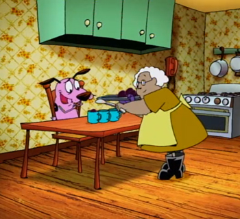

Happy Plums

Description
This recipe always stuck with me as a child because of this particular episode of Courage the Cowardly Dog. I always imagined it gave whoever ate it
the strength to confront a mad scientist in his tower fortress!
Ingredients
- Brown Sugar
- Plumns
- Butter
- Balsamic Vinegar
- Full Fat Sour Cream
Steps
- Preheat oven to 400 degrees.
- Cut plums in half and remove the pit.
- Place the plums in a roasting pan and sprinkle with brown sugar.
- Add a small spoonful of butter to the inside of each plum and place plums in the oven to roast.
- Heat up balsamic vinegar for 15 minutes to create a reduction. Drizzle the vinegar over the plums and return plums to the oven for 5-10 minutes
until soft.
- Remove plums from oven and top with sour cream.